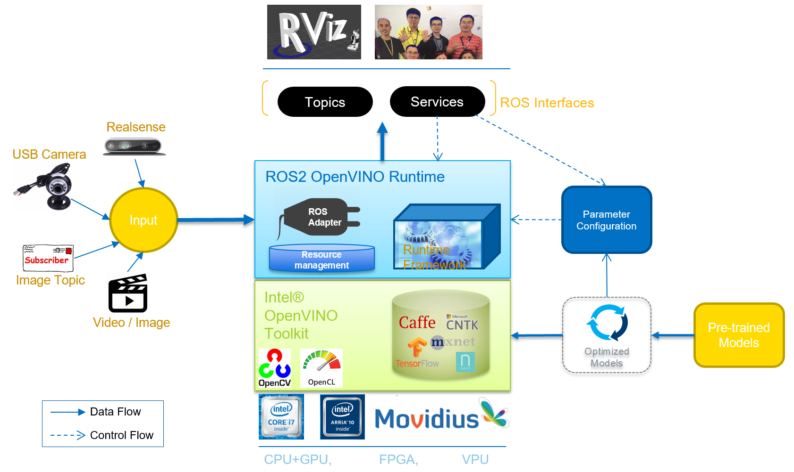
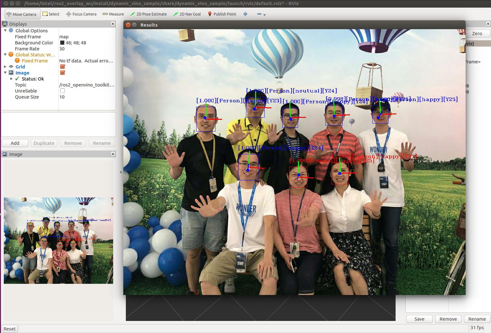

OpenVINO™ Toolkit¶
1. Overview¶
The OpenVINO™ (Open visual inference and neural network optimization) toolkit provides a ROS-adaptered runtime framework of neural network which quickly deploys applications and solutions for vision inference. By leveraging Intel® OpenVINO™ toolkit and corresponding libraries, this runtime framework extends workloads across Intel® hardware (including accelerators) and maximizes performance.
- Enables CNN-based deep learning inference at the edge
- Supports heterogeneous execution across computer vision accelerators—CPU, GPU, Intel® Movidius™ Neural Compute Stick, and FPGA—using a common API
- Speeds up time to market via a library of functions and preoptimized kernels
- Includes optimized calls for OpenCV and OpenVX*
From the view of hirarchical architecture design, the package is divided into different functional components, as shown in below picture.
2. Support Features¶
Diversal Input Components¶
Currently, the package support several kinds of input resources of gaining image data:
| Input Resource | Description |
|---|---|
| StandardCamera | Any RGB camera with USB port supporting. Currently only the first USB camera if many are connected. |
| RealSenseCamera | Intel RealSense RGB-D Camera, directly calling RealSense Camera via librealsense plugin of openCV. |
| Image Topic | Any ROS topic which is structured in image message. |
| Image File | Any image file which can be parsed by openCV, such as .png, .jpeg. |
| Video File | Any video file which can be parsed by openCV. |
Inference Implementations¶
Currently, the inference feature list is supported:
| Inference | Description |
|---|---|
| Face Detection | Object Detection task applied to face recognition using a sequence of neural networks. |
| Emotion Recognition | Emotion recognition based on detected face image. |
| Age & Gender Recognition | Age and gener recognition based on detected face image. |
| Head Pose Estimation | Head pose estimation based on detected face image. |
| Object Detection | Object dtection based on SSD-based trained models. |
| Vehicle Detection | Vehicle and passenger detection based on Intel models. |
| Object Segmentation | Object detection and segmentation. |
| Person Reidentification | Person Reidentification based on object detection. |
Note
For preparing and optimizing your own trained model, you can follow this instruction Model Optimizer Developer Guide.
ROS interfaces and outputs¶
Subscribed Topic¶
Image topic:
/openvino_toolkit/image_raw(sensor_msgs::msg::Image)
Published Topic¶
Face Detection:
/ros2_openvino_toolkit/face_detection (object_msgs::msg::ObjectsInBoxes)
Emotion Recognition:
/ros2_openvino_toolkit/emotions_recognition (people_msgs::msg::EmotionsStamped)
Age and Gender Recognition:
/ros2_openvino_toolkit/age_genders_Recognition (people_msgs::msg::AgeGenderStamped)
Head Pose Estimation:
/ros2_openvino_toolkit/headposes_estimation (people_msgs::msg::HeadPoseStamped)
Object Detection:
/ros2_openvino_toolkit/detected_objects(object_msgs::msg::ObjectsInBoxes)
Object Segmentation:
/ros2_openvino_toolkit/reidentified_persons(people_msgs::msg::ObjectsInMasks)
Person Reidentification:
/ros2_openvino_toolkit/segmented_obejcts(people_msgs::msg::ReidentificationStamped)
Rviz Output:
/ros2_openvino_toolkit/image_rviz(sensor_msgs::msg::Image)
Service¶
Object Detection Service:
/detect_object(object_msgs::srv::DetectObject)
Face Detection Service:
/detect_face(object_msgs::srv::DetectObject)
Age & Gender Detection Service:
/detect_age_gender(people_msgs::srv::AgeGender)
Headpose Detection Service:
/detect_head_pose(people_msgs::srv::HeadPose)
Emotion Detection Service:
/detect_emotion(people_msgs::srv::Emotion)
RVIZ2¶
RVIZ2 dispaly is also supported by the composited topic of original image frame with inference result. To show in RViz tool, add an image marker with the composited topic:
/ros2_openvino_toolkit/image_rviz (sensor_msgs::msg::Image)
Image Window¶
OpenCV based image window is natively supported by the package. To enable window, Image Window output should be added into the output choices in .yaml config file. see the config file guidance for checking/adding this feature in your launching.
5. Launching¶
source enviroment <<<<<<< HEAD:docs/pages/vino.html <<<<<<< HEAD
======= .. code:source /opt/intel/openvino/bin/setupvars.sh export LD_LIBRARY_PATH=$LD_LIBRARY_PATH:/opt/intel/openvino/deployment_tools/inference_engine/samples/build/intel64/Release/lib
source /opt/intel/openvino/bin/setupvars.sh
export LD_LIBRARY_PATH=$LD_LIBRARY_PATH:/opt/intel/openvino/deployment_tools/inference_engine/samples/build/intel64/Release/lib
run face detection sample code input from StandardCamera.(connect Intel® Neural Compute Stick 2)
ros2 launch dynamic_vino_sample pipeline_people_myriad.launch.py
run face detection sample code input from Image.
ros2 launch dynamic_vino_sample pipeline_image.launch.py
run object detection sample code input from RealSenseCamera.(connect Intel® Neural Compute Stick 2)
ros2 launch dynamic_vino_sample pipeline_object.launch.py
run object detection sample code input from RealSenseCameraTopic.(connect Intel® Neural Compute Stick 2)
ros2 launch dynamic_vino_sample pipeline_object_topic.launch.py
run object segmentation sample code input from RealSenseCameraTopic.(connect Intel® Neural Compute Stick 2)
ros2 launch dynamic_vino_sample pipeline_segmentation.launch.py
run object segmentation sample code input from Video.
ros2 launch dynamic_vino_sample pipeline_video.launch.py
run person reidentification sample code input from StandardCamera.
ros2 launch dynamic_vino_sample pipeline_reidentification.launch.py
run vehicle detection sample code input from StandardCamera.
ros2 launch dynamic_vino_sample pipeline_vehicle_detection.launch.py
run object detection service sample code input from Image
Run image processing service:
ros2 launch dynamic_vino_sample image_object_server.launch.py
Run example application with an absolute path of an image on another console:
ros2 run dynamic_vino_sample image_object_client ~/Pictures/car.png
run face detection service sample code input from Image
Run image processing service:
ros2 launch dynamic_vino_sample image_people_server.launch.py
Run example application with an absolute path of an image on another console:
ros2 run dynamic_vino_sample image_people_client ~/Pictures/face.png
Demo Result Snapshots¶
See below pictures for the demo result snapshots.
face detection input from image
object detection input from RealSense™

object segmentation input from video

Person Reidentification input from standard camera

6. ToDo¶
- Support result filtering for inference process, so that the inference results can be filtered to different subsidiary inference. For example, given an image, firstly we do Object Detection on it, secondly we pass cars to vehicle brand recognition and pass license plate to license number recognition.
- Design resource manager to better use such resources as models, engines, and other external plugins.
- Develop GUI based configuration and management tools (and monitoring and diagnose tools), in order to provide easy entry for end users to simplify their operation.